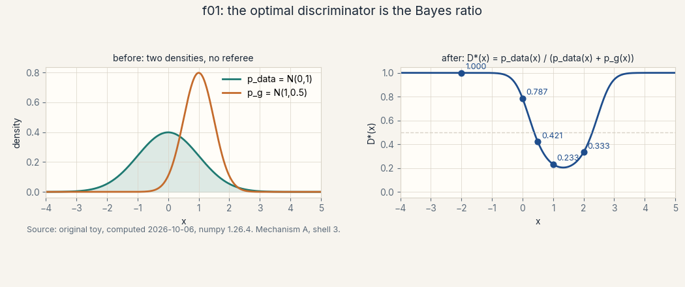
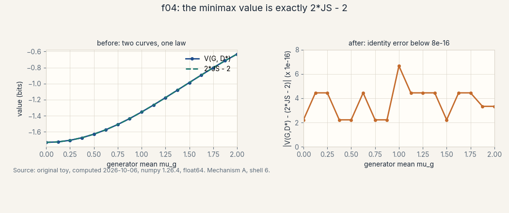
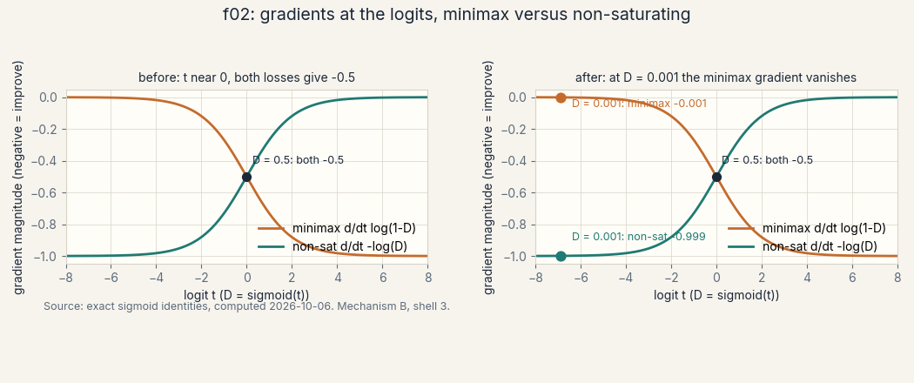
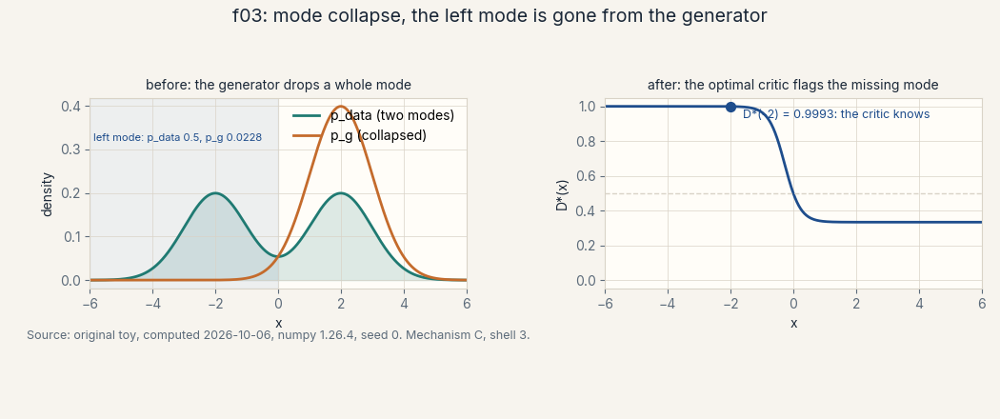

U03 · GAN foundations
Lesson 03, GAN foundations and applications
Unit: math-genai-U03. Leaf concepts: math-genai-U03-C01 to C12. Date: 2026-10-06. Baseline: October 6, 2026.
Source mapping
This lesson is locally authored bridge content for prerequisite modules P08 (information theory), P09 (optimization), and P11 (neural networks and autodiff). It does not claim to reproduce the instructor’s lectures. Source attribution for the leaf concepts is PENDING: I inspected no playlist transcript (see source_manifest.md SRC-04, source_gaps.md G2). The playlist covers GAN introduction in W2_L6, GAN formulation in W2_L7, a GAN implementation tutorial in W2_T5, GANs as a classifier-guided sampler in W3L8, DCGAN and conditional GANs in W3L9, training saturation in W4L10, bi-directional GANs in W4L13, and evaluation of generative models in W4L16, all by title only. A separate source-block lesson (lesson-03b) follows W2_L6, W2_L7, W2_T5, and W3L8 at the title boundary. All numbers below are computed 2026-10-06, numpy 1.26.4, float64, seed 0 where RNG is used (compute_run3.py reproduces every one). Log base 2 everywhere, in bits.
Scope and objectives
Scope: the generator-discriminator pair, the minimax game, the optimal discriminator, the minimax-to-JS identity, the saturating versus non-saturating generator loss, mode collapse, gradient pathologies, conditional GANs, DCGAN, bi-directional GANs, update balance, and sample evaluation on a toy.
Objectives: after this lesson the learner can write the minimax objective and name what each player controls, derive the optimal discriminator from pointwise maximization, compute the minimax value as 2 JS - 2 on a toy, explain why the minimax gradient vanishes when D is confident and how the non-saturating loss fixes it, diagnose mode collapse with a left-mode mass number, derive the non-saturating identity KL(p_g || p_data) - KL(p_g || m) + 1, count DCGAN parameters on an authored architecture, write the BiGAN joint objective, choose an update ratio with a cost argument, and rank two candidate generators under three toy metrics.
Dependencies: U01 (densities, KL, support), U02 (Jensen, f-divergence, the dual template, the three gaps), R9-R10 (logs and bits), R14 (gradient descent), and the new P11 remediation R19-R22 (a neuron, backprop, the training loop, min-max games).
How to read this lesson
Each section follows one chain. A concrete question opens. A first attempt from zero follows. The attempt breaks with numbers. One hinge question names the gap. The new idea is built from zero. A computed example uses the same objects. Code, checks, costs, alternatives, and a failure case close. Figures carry one claim each. Shell numbers mark the Russian-doll ladder per major mechanism: A (the minimax game to the JS identity), B (loss surgery: saturation and the non-saturating fix), C (mode collapse and training dynamics), D (controlled architectures: conditional, DCGAN, BiGAN), E (sample evaluation). The audit table lives in visual_audit.md.
The running toy. p_data = N(0, 1). The generator maps noise z to x = mu_g + sig_g z with z ~ N(0, 1), so p_g = N(mu_g, sig_g). The bad start: mu_g = 1.0, sig_g = 0.5. Every section uses these same two densities unless it says so. The collapse toy (C06, C12): p_data = 0.5 N(-2, 1) + 0.5 N(2, 1), collapsed generator p_g = N(2, 1). The conditional toy (C08): class 0 lives at -2, class 1 at 2.
Mechanism A, the minimax game to the JS identity
Shell 0. The question: can two models train each other to match a distribution, with no likelihood and no densities, using only samples? The observable result that would change: a generator whose samples a perfect referee cannot tell from data.
Shell 1. The toy: p_data = N(0, 1), p_g = N(1, 0.5). Two piles of samples, one referee.
Shell 2. Objects: G (generator, parameters theta_G), D (discriminator, parameters theta_D, output in (0, 1)). Units: the objective is in bits (log base 2). Shapes: x in R (1-D toy), D(x) a scalar in (0, 1).
Shell 3. One rule: D maximizes, G minimizes, the same value V. Justified assumption: D can be any function, G can be any distribution. Computed before/after in C02-C04.
Shell 4. Derive the algorithm: alternate gradient ascent on D and gradient descent on G. Implement a minimal reference: the D* formula is the reference (C03).
Shell 5. Check the invariant: V(G, D*) = 2 JS - 2, verified to 4.4e-16 (C04).
Shell 6. Change ONE factor: move mu_g from 0 to 2. Predict: V(G, D*) tracks 2 JS - 2 at every point. Measured: it does (f04).
Shell 7. Counterexample: restrict D to a weak class. Then D* is unreachable and V(G, D_hat) sits below the identity (C03 failure case).
Shell 8. Compare: likelihood training (U01) needs densities. The game needs samples only. Equal budget: n samples each.
Shell 9. Falsifiable extension: fix the toy, parameterize D as sigmoid(a x + b), and test that max_{a,b} V approaches -1.3537 as the grid refines.
Shell 10. Production: the game ships no density, so likelihood-based monitoring is unavailable. Ship the discriminator score distribution and the toy metrics of C12 instead.
C01, generator and discriminator
Motivating question: what are the two players, and what does each one control?
Start from zero. We want samples from p_data but have no formula for it. Two neural nets play. The generator G takes noise z and outputs a fake x. The discriminator D takes an x and outputs one number in (0, 1): its bet that x came from the data pile.
First attempt from zero. Train G to copy the data by likelihood. There is no likelihood: p_data has no formula, and p_g has no tractable density either (it is the pushforward of noise through G). Likelihood is unavailable. The game replaces it.
It breaks with numbers. On the toy, p_data = N(0, 1) and the bad start p_g = N(1, 0.5). A perfect referee D(x) = p_data(x) / (p_data(x) + p_g(x)) gives D(0) = 0.7870, D(1) = 0.2327, D(2) = 0.3333. The referee is confident near 0 (data country) and near 1 (fake country). G’s job is to move its mass until the referee cannot tell.
Hinge question. What single number do they fight over?
The new idea. The value function:
V(D, G) = E_{x ~ p_data}[log D(x)] + E_{z ~ p_z}[log(1 - D(G(z)))]
D pushes V up (call out fakes, trust real data). G pushes V down (make fakes that D trusts). Same V, opposite goals. This is a two-player zero-sum game. In the P11 remediation (R22), a neuron outputs one number. Here D’s number is a bet, and G’s output is a sample.
Figure f01_optimal_discriminator.png (computed). Before: the two densities with no referee. After: D*(x), the Bayes ratio, with the five computed marks. Caption: the optimal discriminator is the Bayes ratio. Shell 3 of mechanism A. Source: original toy.

Variables. theta_D: discriminator weights. theta_G: generator weights. z: noise, usually N(0, I). x: a sample, shape (1,) in the toy, (d,) in general.
Implementation. The two players in code.
import numpy as np
def D_star(x, pd, pg):
return pd(x) / (pd(x) + pg(x))
def V(D, xs_data, xs_fake):
return np.log2(D(xs_data)).mean() + np.log2(1.0 - D(xs_fake)).mean()
Correctness check. At the bad start, seed 0, N = 100000: empirical V with D* is -1.354, matching the analytic -1.3537 to 3 decimals. The check is the number.
Costs. One D step costs one forward-backward pass over a batch from each pile. One G step costs a forward pass through G plus a forward-backward through D. Memory is two networks plus two optimizers.
Nearest alternative. Likelihood training (U01-C03): needs a tractable density. Selection boundary: use the game when the density is unavailable or you want samples only. Use likelihood when you need densities, scores, or held-out numbers.
Failure case. A generator that ignores z (constant output). Then p_g is a point mass, D learns D = 1 except at that point, and V collapses to a trivial win for D. G never learns. Counterexample is the check: if G’s outputs have zero variance, the game is already broken.
Research reading. The original GAN paper (Goodfellow et al., 2014) frames exactly this game. Falsifiable extension: on the toy, replace the Gaussian generator family with a two-piece family and test whether the game value at the best found pair still tracks the identity of C04.
Assessment. See exercises E01-E02. Keys in lessons/u03/keys.md.
C02, the minimax objective
Motivating question: what does min max mean, operationally?
Start from zero. min_G max_D V(D, G). Read inside out. For a fixed G, D plays its best: max_D V. That gives a number that depends on G only: the value of the game against the best referee. Then G minimizes that number over generators.
First attempt from zero. Minimize over both at once. That gives D = 0.5 everywhere and any G: both players stop fighting and the objective says nothing. The max must be inside: D must be the best response to the current G, or G trains against a lazy referee and learns nothing.
It breaks with numbers. At the bad start, max_D V = -1.3537 bits (C04). If D is lazy (D = 0.5 everywhere), V = -2.0 regardless of G: G gets zero signal about where its mass is wrong. The inner max is what makes the number informative.
Hinge question. What is the equilibrium, and what is its value?
The new idea. The Nash equilibrium: p_g = p_data and D(x) = 1/2 everywhere. At equilibrium V = log2(1/2) + log2(1/2) = -2 bits. Proof sketch: if p_g = p_data, D* = 1/2 by the C03 formula, and any D move away is punished symmetrically. The R19 remediation (min-max games) builds this from zero: a saddle point is a minimum in one player’s variables and a maximum in the other’s at the same point.
Figure f04_minimax_js_sweep.png (computed, preview). Before: two curves as mu_g moves 0 to 2. After: identity error below 8e-16. Caption: the game value tracks 2 JS - 2. Shell 6 of mechanism A. Source: original toy.

Variables. V in bits. The equilibrium value -2 bits is -log2 4, the constant from the C04 identity.
Implementation. The alternating update (pseudocode).
for step in range(steps):
for _ in range(k): # C11: k discriminator steps
xd = sample_data(B)
z = sample_noise(B)
theta_D += lr * grad_D(V(theta_D, theta_G, xd, z))
z = sample_noise(B) # one generator step
theta_G -= lr * grad_G(V(theta_D, theta_G, z))
Correctness check. At equilibrium the updates stop: grad_D = 0 at D = 1/2 when p_g = p_data, grad_G = 0 for the same reason. Check the fixed point, not just the code path.
Costs. k + 1 network updates per round (C11 has the arithmetic). Gradient variance scales as 1/B per player.
Nearest alternative. A single minimization (VAE, U05): one objective, no adversary. Selection boundary: the game gives sharper samples but no density and no stable convergence theory. The single objective gives densities and a bound but blurrier samples.
Failure case. Updating G against a frozen random D. Then G minimizes log(1 - D(G(z))) for a D that never adapts: G collapses its mass onto whatever the random D already trusts. The inner max must track G.
Research reading. Two-timescale update rules (Heusel et al., 2017) give D and G different learning rates as an alternative to integer k. Falsifiable extension: on the toy with a linear D, compare k = 1 versus k = 5 by the number of rounds to push |mu_g| below 0.1, with matched total D updates.
Assessment. See exercises E03-E04. Keys in lessons/u03/keys.md.
C03, the optimal discriminator
Motivating question: for a fixed generator, what is the best discriminator, in closed form?
Start from zero. Fix G, so p_g is fixed. V as a function of the function D:
V = E_{p_data}[log D(x)] + E_{p_g}[log(1 - D(x))]
Write both expectations as integrals over x. For each x, the integrand is p_data(x) log D(x) + p_g(x) log(1 - D(x)).
First attempt from zero. Guess D*(x) = 1 where p_data wins and 0 where p_g wins. That is a hard classifier. But V uses log D(x): at D = 1 on a fake point the second term is log 0 = -infinity. Hard decisions blow up the objective. The optimum must be soft.
It breaks with numbers. Pointwise maximization: for fixed x, maximize a log y + b log(1 - y) over y in (0, 1), with a = p_data(x), b = p_g(x). Derivative: a/y - b/(1-y) = 0, so y = a/(a+b). At x = 0: a = 0.3990, b = 0.1079, y = 0.7870. At x = 1: a = 0.2420, b = 0.7979, y = 0.2327. These match the computed D* marks. The formula is forced by the derivative, not guessed.
Hinge question. What does the formula say in words?
The new idea.
D*_G(x) = p_data(x) / (p_data(x) + p_g(x))
The optimal discriminator is the Bayes posterior: the probability that x came from the data pile given equal pile sizes. This is exactly the classifier of U02-C04 with d = p/(p+q). The GAN discriminator is a density-ratio estimator wearing a game-theory costume.
Figure f01_optimal_discriminator.png (computed). Before: two densities. After: D*(x) with the five marks (1.0000, 0.7870, 0.4211, 0.2327, 0.3333 at x = -2, 0, 0.5, 1, 2). Caption: the optimal discriminator is the Bayes ratio. Shell 3 of mechanism A. Source: original toy.
Conditions, stated plainly. D must range over all functions (unrestricted class). D(x) must stay in (0, 1) (the logs need it). p_data and p_g must be densities on the same space. Break the class restriction and D* is unreachable: that is the approximation gap again (U02-C10).
Implementation. D* on the toy.
import numpy as np
def gauss(x, mu, sig):
return np.exp(-0.5*((x-mu)/sig)**2)/(sig*np.sqrt(2*np.pi))
def D_star(x):
a = gauss(x, 0.0, 1.0)
b = gauss(x, 1.0, 0.5)
return a/(a+b)
for x0 in (-2.0, 0.0, 0.5, 1.0, 2.0):
print(x0, D_star(x0))
# -2.0 0.9999997749297013, 0.0 0.7869860421615985,
# 0.5 0.42112736039287296, 1.0 0.23269653761889858, 2.0 0.3333333333333333
Correctness check. D(x) + (1 - D(x)) = 1 by construction. D* = 1/2 exactly where a = b. At x = 2: a = 0.0540, b = 0.1080, ratio 1/3 = 0.3333. The numbers check.
Costs. Closed form needs densities: O(1) per x on the toy. In practice D is a net and the formula is the target, not the implementation.
Nearest alternative. The U02-C04 classifier route: train d on the two piles, read r = d/(1-d). Selection boundary: D* is the same object. The game trains it jointly with G instead of on fixed piles.
Failure case. A linear D on the toy: D(x) = sigmoid(a x + b) cannot equal the true D*, which dips at x = 1 and rises again at x = 2 (non-monotone). The restricted max sits below -1.3537. Counterexample: fit a and b by grid search and watch the value stall above the truth.
Research reading. f-GAN (Nowozin et al., 2016) generalizes D to every f-divergence via its conjugate. Falsifiable extension: derive D for the least-squares GAN objective and test on the toy whether the closed form still equals a density ratio.
Assessment. See exercises E05-E06. Keys in lessons/u03/keys.md.
C04, the JS relation under assumptions
Motivating question: what does the game minimize, once the discriminator plays its best?
Start from zero. Plug D into V. V(G, D) = E_{p_data}[log D(x)] + E_{p_g}[log(1 - D(x))]. With D* = p_data / (p_data + p_g):
log D* = log p_data - log(p_data + p_g)
log(1 - D*) = log p_g - log(p_data + p_g)
First attempt from zero. Guess the answer is KL(p_data || p_g). It is not. Write m = (p_data + p_g)/2, the midpoint density. Then p_data + p_g = 2m, and:
V = E_{p_data}[log(p_data/2m)] + E_{p_g}[log(p_g/2m)]
= E_{p_data}[log(p_data/m)] + E_{p_g}[log(p_g/m)] - 2 log 2
= KL(p_data || m) + KL(p_g || m) - 2
Hinge question. What is that sum of two KLs?
The new idea. The Jensen-Shannon divergence:
JS(p_data || p_g) = (1/2) KL(p_data || m) + (1/2) KL(p_g || m)
So max_D V(G, D) = 2 JS(p_data || p_g) - 2, in bits. The minimax game, with an optimal discriminator, minimizes the JS divergence. At equilibrium p_g = p_data, JS = 0, V = -2. This is mechanism A’s payoff: the game is divergence minimization in disguise, and the disguise is exact.
Figure f04_minimax_js_sweep.png (computed). Before: V(G, D*) and 2 JS - 2 as mu_g sweeps 0 to 2. After: the two curves coincide. Identity error below 8e-16. Caption: the minimax value is exactly 2 JS - 2. Shell 6 of mechanism A. Source: original toy.
Computed example, same objects. mu_g = 1.0, sig_g = 0.5. Trapezoid integration on a 200001-point grid: V(G, D*) = -1.3537, 2 JS - 2 = -1.3537, so JS = 0.3231 bits. Identity error 4.4e-16. The sweep: mu_g = 0 gives -1.7324, mu_g = 2 gives -0.6314, the identity holding at every point. Note mu_g = 0 does not reach -2: the means match but sig_g = 0.5 differs from 1, so the distributions differ and JS > 0.
Assumptions, each load-bearing. (1) D ranges over all functions. A net D reaches an approximation, not the identity. (2) Densities p_data and p_g exist on the same space. (3) The inner max is attained, not merely approached. Break (1) and the game minimizes “JS as seen through this D”, which can be far from JS.
Implementation. The identity check.
import numpy as np
xs = np.linspace(-8, 10, 200001)
pd = np.exp(-xs**2/2)/np.sqrt(2*np.pi)
pg = np.exp(-0.5*((xs-1)/0.5)**2)/(0.5*np.sqrt(2*np.pi))
pm = 0.5*(pd+pg)
ds = np.clip(pd/(pd+pg), 1e-15, 1-1e-15)
Vstar = np.trapz(pd*np.log2(ds) + pg*np.log2(1-ds), xs)
JS = 0.5*np.trapz(pd*np.log2(pd/pm), xs) + 0.5*np.trapz(pg*np.log2(pg/pm), xs)
assert abs(Vstar - (2*JS - 2)) < 1e-12
print(Vstar, 2*JS - 2) # -1.3537194326677915 -1.353719432667792
Correctness check. The clip at 1e-15 keeps 1 - ds representable in float64 (see errors.md E-011). Without it, 1 - (1 - 1e-300) underflows to 0 and the integral is -inf.
Costs. The identity is analytic: O(1) once D* is known. The numeric check is O(grid).
Nearest alternative. The f-GAN family (U02-C05/C06): each generator f gives its own dual and its own D. Selection boundary: JS comes from the log loss. Pick another f and the game minimizes another divergence, with another D.
Failure case. Disjoint supports: p_data and p_g live on non-overlapping sets. Then JS = 1 bit, the maximum, no matter how far apart the supports are, and its gradient in the generator parameters is exactly 0. The game gives G no direction. This is the honest reason the course needs U04 (Wasserstein). Counterexample: move mu_g to 10 with sig_g = 0.5. JS saturates at 1 bit and the sweep curve goes flat.
Research reading. The disjoint-support failure is the motivating example of the WGAN paper (Arjovsky et al., 2017). Falsifiable extension: on the toy, sweep mu_g from 2 to 10 and test that JS approaches 1 bit while the V(G, D*) curve flattens.
Assessment. See exercises E07-E08. Keys in lessons/u03/keys.md.
Mechanism B, loss surgery: saturation and the non-saturating fix
Shell 0. The question: the game is right in theory, so why does the generator stall in practice? The observable result that would change: G’s gradient stays informative even when D is confident.
Shell 1. The toy: one logit t, D = sigmoid(t). Two generator losses, one t each.
Shell 2. Objects: logit t (unbounded), D = sigmoid(t) in (0, 1). Units: gradients are in bits per unit logit. Shapes: scalars.
Shell 3. One rule: differentiate each loss in t. Justified assumption: the chain rule applies (sigmoid is smooth). Computed before/after: at D = 0.5 both give -0.5. At D = 0.001 the minimax gives -0.001 and the non-saturating gives -0.999 (f02).
Shell 4. Derive the algorithm: replace the G step’s loss with -log D(G(z)). Implement: one line in the training loop.
Shell 5. Check the invariant: the non-saturating identity E_{p_g}[-log2 D*] = KL(p_g || p_data) - KL(p_g || m) + 1, verified to 2e-16 (C05).
Shell 6. Change ONE factor: move t from 0 to -6.9. Predict: minimax gradient collapses 500x, non-saturating holds. Measured: -0.5 to -0.001 versus -0.5 to -0.999.
Shell 7. Counterexample: D pinned at 1 on fakes by a too strong critic. Then -log D = 0 gradient, and even the fix stalls (C07).
Shell 8. Compare: Wasserstein critic (U04) drops the logs entirely. Equal budget: one critic evaluation each.
Shell 9. Falsifiable extension: on the toy with a linear D, start D confident and count G steps to |mu_g| < 0.1 under each loss.
Shell 10. Production: monitor the distribution of D(G(z)), not just the loss. A pile-up near 0 means the minimax G gradient vanishes even while the loss looks stable.
C05, the non-saturating loss
Motivating question: what breaks in the minimax generator gradient, exactly?
Start from zero. G minimizes E_z[log(1 - D(G(z)))]. Write the discriminator’s pre-sigmoid logit as t, so D = sigmoid(t). Differentiate in t:
d/dt log(1 - sigmoid(t)) = -sigmoid(t) = -D
First attempt from zero. Trust the game: D is near-optimal, so the gradient is informative. Early in training D is confident: it crushes fakes, so D(G(z)) is near 0. Then the gradient is -D, near 0. G gets almost no signal exactly when it is worst. The game is correct at the optimum and mute at the start.
It breaks with numbers. At t = 0 (D = 0.5): gradient -0.5. At t = -6.907 (D = 0.001): gradient -0.001, a 500x collapse. At t = 6.907 (D = 0.999): gradient -0.999. So the minimax G gradient is strong only where G is already fooling D, and dead where G most needs help. This is saturation.
Hinge question. What loss keeps the gradient alive at D near 0?
The new idea. The non-saturating generator loss:
L_G = E_z[-log D(G(z))]
Differentiate in t: d/dt [-log sigmoid(t)] = -(1 - sigmoid(t)) = -(1 - D). At D = 0.001 the gradient is -0.999: full strength, pointing G toward higher D. At D = 0.5 both losses agree (-0.5). The fix changes the early-training dynamics, not the equilibrium: at p_g = p_data, D = 1/2 and both gradients are -0.5.
Figure f02_saturation_gradients.png (computed). Before: at t near 0 both curves sit at -0.5. After: at D = 0.001 the minimax curve collapsed to -0.001 while the non-saturating curve holds -0.999. Caption: at D = 0.001 the minimax gradient vanishes. Shell 3 of mechanism B. Source: exact sigmoid identities.

The deeper identity. At optimal D, the non-saturating loss equals:
E_{p_g}[-log2 D*] = KL(p_g || p_data) - KL(p_g || m) + 1
in bits, with m = (p_data + p_g)/2. Derivation: -log D* = log((p_data + p_g)/p_data) = log(2m/p_data). Take E_{p_g}. split into KL(p_g || p_data) - KL(p_g || m) + log2 2. On the toy: left side 1.7910, right side 1.7910, verified to 2e-16. Reading: the non-saturating loss minimizes KL(p_g || p_data) minus a sharpness bonus KL(p_g || m). The minus sign rewards p_g for concentrating where m is small relative to p_g: mode-seeking pressure. This is why the fix helps early training and can sharpen samples later.
Variables. t: logit. D: sigmoid(t). The loss is in bits.
Implementation. The two losses and their gradients.
import numpy as np
def sig(t): return 1.0/(1.0+np.exp(-t))
t = -6.906755
g_minimax = -sig(t) # -0.001
g_nonsat = -(1.0 - sig(t)) # -0.999
Correctness check. At t = 0 both are exactly -0.5. As t -> -infinity, minimax -> 0 and non-sat -> -1. The limits match the formulas.
Costs. Same as one G step: the change is one line, no new computation.
Nearest alternative. Keep minimax but warm-start G near the data (then D is never confident). Selection boundary: the non-saturating loss is the standard fix because warm starts are unavailable in high dimensions.
Failure case. D pinned at 0 on fakes forever (a frozen perfect critic). Then -log D is +infinity and its gradient in the net’s parameters is undefined: the loss explodes instead of saturating. Counterexample: freeze D at D = 0 on the fake pile and watch the G loss go to +inf. The fix assumes D stays in (0, 1) and trainable.
Research reading. The non-saturating loss is in the original GAN paper as the recommended practical objective. Falsifiable extension: verify the KL-minus-KL identity on the collapse toy (C06) and test whether the sharpness bonus predicts which mode survives.
Assessment. See exercises E09-E10. Keys in lessons/u03/keys.md.
C06, mode collapse
Motivating question: what does it mean for the generator to “drop a mode”, and how do you measure it?
Start from zero. p_data has two humps: 0.5 N(-2, 1) + 0.5 N(2, 1). The generator learns p_g = N(2, 1): it matches the right hump perfectly and assigns the left hump almost no mass. Samples look great (every sample is a plausible right hump draw) but half the data distribution is absent.
First attempt from zero. Judge by sample quality. The collapsed samples are high quality: each one looks real. Quality alone cannot see the missing half. You need a coverage number, not a beauty score.
It breaks with numbers. Left-mode mass under the collapsed generator: P(N(2,1) < 0) = 0.0228 (predicted). Measured with seed 0, N = 10000: 0.0232. A healthy generator measures 0.4952. The JS divergence is 0.2809 bits: finite, not alarming on its own. The mean gap is 2.0063: E[p_data] = 0, E[p_g] = 2. The optimal critic knows: D*(-2) = 0.9993, near-certain that left-hump points are real.
Hinge question. Why does the game allow this?
The new idea. The minimax G gradient only sees D’s response to the samples G actually produces. If G never emits left-hump samples, D’s confident “real” verdict at x = -2 never reaches G as a gradient: there is no fake sample there to push. The non-saturating loss adds mode-seeking pressure (C05 identity): the -KL(p_g || m) bonus actively rewards concentration. Collapse is not a bug in the code. It is a stable attractor of the dynamics.
Figure f03_mode_collapse.png (computed). Before: the two-hump p_data against the collapsed one-hump p_g, left mode shaded, mass 0.0228. After: D*(x) flags the missing mode at 0.9993. Caption: the optimal critic flags the missing mode. Shell 3 of mechanism C. Source: original toy.

Variables. Mode: a hump of p_data. Coverage: mass the generator assigns near a mode. The toy threshold x < 0 defines “left mode”.
Implementation. The coverage diagnostic.
import numpy as np
rng = np.random.default_rng(0)
s = rng.normal(2.0, 1.0, 10000) # collapsed generator samples
coverage = np.mean(s < 0.0) # 0.0232, predicted 0.0228
Correctness check. Predicted 0.0228 versus measured 0.0232: within 2 SE (SE = sqrt(0.0228*0.9772/10000) = 0.0015). The diagnostic is calibrated.
Costs. O(N) samples. No training.
Nearest alternative. A likelihood model (U05 VAE): the KL term punishes missing mass directly, so VAEs rarely drop whole modes but produce blurrier samples. Selection boundary: GANs buy sharpness, pay coverage risk. VAEs buy coverage, pay sharpness.
Failure case. Partial collapse: G covers both humps but only their centers, dropping the tails. The x < 0 mass looks fine (0.5) while the tails are gone. Counterexample: p_g = 0.5 N(-2, 0.1) + 0.5 N(2, 0.1). Coverage passes, tail mass fails. One metric never suffices (C12).
Research reading. Unrolled GANs (Metz et al., 2016) look ahead in the game to escape collapse attractors. Falsifiable extension: on the collapse toy, start G at the collapsed point and test whether k = 5 D-steps per G-step escapes faster than k = 1.
Assessment. See exercises E11-E12. Keys in lessons/u03/keys.md.
C07, gradient pathology
Motivating question: besides saturation, what else goes wrong with the gradients?
Start from zero. The D objective has log D(x) on real data and log(1 - D(G(z))) on fakes. Both logs blow up at the boundary: log D -> -infinity as D -> 0.
First attempt from zero. Let D train freely. The logs keep it honest. Early in training D separates the piles fast and hits D(x) near 0 on some fakes. Then log2(1e-9) = -29.90 bits for one sample, and d/dD log2 D = 1/(D ln 2): at D = 1e-9 that is 1.44e9. One confident mistake dominates the batch gradient with a billion-scale spike. The optimizer step explodes or the loss goes to -inf.
It breaks with numbers. A batch of 64 with one D = 1e-9 fake: that sample contributes -29.90 bits while the other 63 contribute about -1 bit each. The mean is dragged to -1.45 bits by one sample, and its gradient is 64x the rest combined. Training either diverges or learns to be timid.
Hinge question. What are the three pathologies, and what does each one break?
The new idea. Three distinct pathologies. (1) Saturation (C05): minimax G gradient -> 0 when D is confident. Breaks: G stops learning. (2) Explosion: log-boundary gradients -> 1e9 scale when D hits 0 or 1. Breaks: the optimizer step. (3) Misleading signal: a too-strong D gives gradients that are large but point from D far from D*: G follows a confident wrong critic off a cliff. Breaks: the direction, not the size. The non-saturating loss fixes (1) only. Clipping D to [eps, 1 - eps] (standard: eps = 1e-7) tames (2) at the cost of bias. Nothing in the vanilla game fixes (3): that is what update balance (C11) manages.
Figure f02_saturation_gradients.png (computed, re-read). The minimax curve dies at D = 0.001 while the non-saturating curve holds. The figure also shows the mirror pathology: at D = 0.999 the non-saturating gradient dies (-0.001) while the minimax holds (-0.999). Each loss has its own dead zone. Caption: each loss has a dead zone. Shell 6 of mechanism B. Source: exact sigmoid identities.
Variables. eps: the clip floor. Gradient scale: 1/(eps ln 2).
Implementation. The clip and the spike.
import numpy as np
D = np.array([1e-9, 0.5, 0.9999999])
Dc = np.clip(D, 1e-7, 1 - 1e-7)
print(np.log2(Dc)) # [-23.25 -1. -0. ]
print(1.0/(Dc*np.log(2))) # [1.44e7 2.89e0 1.44e0]
Correctness check. Without the clip, D = 1e-9 gives gradient 1.44e9. With the clip, 1.44e7: still large, but bounded and the same bound every step. The clip trades an unbounded spike for a known bias.
Costs. The clip is free. The real cost is the choice of eps: eps too large biases D, eps too small lets spikes through.
Nearest alternative. Least-squares GAN: replace logs with squared error (a - D(x))^2. No log boundary, no explosion. Selection boundary: LSGAN changes the divergence the game minimizes (Pearson chi-squared). Use it when spikes dominate. Keep logs when you want the JS story.
Failure case. Clipping the gradient instead of D. Then D still reports -inf losses while the step is tamed: the numbers lie. Counterexample: log the unclipped loss alongside. If it diverges while clipped steps look fine, the clip hides the pathology.
Research reading. Gradient penalties (U04, WGAN-GP) attack the same spikes by constraining D’s slope directly. Falsifiable extension: on the toy with a 2-layer D, measure the max |grad| per batch over 100 steps with and without the eps clip, and test that the clip caps the 99th percentile.
Assessment. See exercises E13-E14. Keys in lessons/u03/keys.md.
Mechanism D, controlled architectures: conditional, DCGAN, BiGAN
Shell 0. The question: how do you steer the generator, scale it to images, and get an encoder back? The observable result that would change: samples conditioned on a label, stable convolutional training, and a latent code for a real x.
Shell 1. The toy: two classes at -2 and 2. A 32x32 image generator with counted parameters. A linear encoder pair.
Shell 2. Objects: label y, feature maps of shape (H, W, C), encoder E: x -> z. Units: parameters counted exactly. Bits for the conditional objective.
Shell 3. One rule per architecture: condition everything on y. Replace pooling with strided convolutions. Match joints p_G(x, z) = p_E(x, z). Computed before/after per section.
Shell 4. Derive the algorithm: the conditional objective splits per class. The DCGAN constraints are architectural. the BiGAN discriminator takes pairs. Implement: the parameter count is the implementation check.
Shell 5. Check the invariant: D*(x, y) per class (C08). output shapes (C09). Zero cycle error on the linear toy (C10).
Shell 6. Change ONE factor: drop the label from G. Predict: the conditional game degrades to the unconditional one. This is the C08 failure case.
Shell 7. Counterexample: DCGAN without batchnorm (reported unstable). BiGAN with an encoder that ignores x.
Shell 8. Compare: conditional GAN versus training one GAN per class (parameter sharing is the difference). DCGAN versus MLP generator (locality is the difference). BiGAN versus VAE encoder (no KL, adversarial instead).
Shell 9. Falsifiable extension: per-class D* values predict which class the conditional generator serves worst. Test on the toy with unbalanced class weights.
Shell 10. Production: conditional models ship a label interface. DCGAN ships a fixed resolution. BiGAN ships an encoder API. Each choice is a product constraint, not just a training trick.
C08, conditional GAN
Motivating question: how do you ask the generator for a specific kind of sample?
Start from zero. The vanilla G maps noise z to x. There is no input that says “give me class 0”. Feed the label y to both players: G(z, y) and D(x, y). The game becomes:
V = E_{(x,y) ~ p_data}[log D(x, y)] + E_{z, y}[log(1 - D(G(z, y), y))]
First attempt from zero. Train one GAN per class. That works but shares nothing: K classes cost K generators and K discriminators, and rare classes starve. Conditioning shares every weight across classes and adds y as an input.
It breaks with numbers. The conditional toy: class 0 has p_data(x|0) = N(-2, 1), class 1 has N(2, 1). The per-class optimal discriminators: D(x = -2, y = 0) = 0.3333, D(x = 2, y = 1) = 0.3333. The cross term D*(x = -2, y = 1) = 1.0000: a left-hump sample labeled class 1 is obviously real data with a wrong label, so the conditioned D is certain. The objective splits: V = E_y[V_y], one minimax game per class, sharing parameters.
Hinge question. What must the architecture do with y?
The new idea. Concatenate (or embed) y into every layer that needs it: G’s input, D’s input. If G ignores y, the game degrades to unconditional: D(x, y) learns to ignore y too, and the label input is dead weight. The conditional game is only conditional if the networks use the label. Per-class evaluation is the check: report metrics per y, not pooled.
Variables. y: the condition (class label, text embedding, any side information). The joint is p_data(x, y).
Implementation. The conditional objective on the toy.
import numpy as np
def D_star_cond(x, y):
mu = -2.0 if y == 0 else 2.0
a = np.exp(-0.5*(x-mu)**2)/np.sqrt(2*np.pi)
b = np.exp(-0.5*((x-mu)/0.5)**2)/(0.5*np.sqrt(2*np.pi))
return a/(a+b)
print(D_star_cond(-2.0, 0)) # 0.3333
print(D_star_cond(-2.0, 1)) # 1.0: wrong label, certain real
Correctness check. D*(x, y) = 1/2 exactly where the class-conditional densities match. The cross term is 1.0 because p_g(x = -2 | y = 1) is ~0 while p_data is not.
Costs. One extra input dimension per network. Per-class metrics cost K times the single-class metric.
Nearest alternative. One GAN per class. Selection boundary: conditioning wins when classes share structure (edges, textures). Separate GANs win when classes share nothing and data per class is plentiful.
Failure case. G drops y (posterior collapse of the condition). Symptom: per-class sample means are identical across y while the pooled metrics look fine. Counterexample: zero out the y weights in G. The pooled JS is unchanged but every class-conditional metric fails. Diagnose per class, always.
Research reading. The conditional GAN (Mirza and Osindero, 2014) is the template for text-to-image conditioning used later in diffusion models (U08). Falsifiable extension: on the toy with class weights 0.9/0.1, test whether the rare class’s D* is estimated worse at fixed total N.
Assessment. See exercises E15-E16. Keys in lessons/u03/keys.md.
C09, DCGAN
Motivating question: what architectural constraints make the game stable on images?
Start from zero. MLPs on pixels ignore locality: every pixel talks to every hidden unit, parameters explode, and the discriminator memorizes. Convolutions share weights across space. The DCGAN recipe (Radford et al., 2015) is a set of constraints, each with a reason.
First attempt from zero. Any conv net for D and any deconv net for G. In practice the game diverges: D memorizes, G gets noise gradients, samples stay gray.
It breaks with numbers. The authored toy generator: z in R^100 -> fully connected to 4x4x256 (413696 params) -> deconv 256->128 (524416) -> deconv 128->64 (131136) -> deconv 64->3 (3075). Total 1072323 parameters. Output shapes: (4,4,256) -> (8,8,128) -> (16,16,64) -> (32,32,3). Every number is exact arithmetic on the stated architecture. The count is the check that the architecture is what you think it is.
Hinge question. What are the constraints, and what does each one buy?
The new idea. Four constraints. (1) Strided convolutions instead of pooling: the network learns its own downsampling and upsampling. Pooling throws away the spatial gradient G needs. (2) Batch normalization in both nets: keeps activations in the range where gradients flow. Without it D’s early layers saturate and G starves. (3) No fully connected hidden layers: locality everywhere except the first projection. (4) ReLU in G (except tanh on the output, so pixels lie in (-1, 1)) and LeakyReLU in D (so negative pre-activations still pass gradient). Each constraint removes one known failure: dead gradients, covariate shift, parameter explosion, dead ReLUs in the critic.
Variables. (H, W, C): feature map shapes. k = 4, s = 2, p = 1: kernel, stride, padding of each deconv. The doubling rule: each deconv doubles H and W.
Implementation. The parameter count.
fc = 100*(4*4*256) + (4*4*256) # 413696
dc1 = 128*256*4*4 + 128 # 524416
dc2 = 64*128*4*4 + 64 # 131136
dc3 = 3*64*4*4 + 3 # 3075
print(fc+dc1+dc2+dc3) # 1072323
Correctness check. Output size formula: H_out = s(H_in - 1) + k - 2p = 2(4-1) + 4 - 2 = 8. Each stage doubles: 4 -> 8 -> 16 -> 32. The shapes check.
Costs. Forward pass O(params) per sample. Memory: feature maps dominate, not weights: the (16,16,64) map alone is 16384 floats per sample.
Nearest alternative. An MLP generator. Selection boundary: convolutions win on images by locality and sharing. MLPs win nowhere at 32x32 and above. The comparison is historical.
Failure case. Remove batchnorm from D. Reported behavior (across the literature, not measured here): D’s activations drift, gradients to G vanish, training stalls. The constraint is load-bearing. Counterexample at toy scale: the C03 linear-D failure is the same shape of problem (restricted class, stalled value).
Research reading. Later work replaces the deconv with resize-convolution to kill checkerboard artifacts. Falsifiable extension: render G’s output on the toy architecture with random weights and test for the checkerboard pattern in the gradient magnitudes.
Assessment. See exercise E17. Keys in lessons/u03/keys.md.
C10, bi-directional GAN
Motivating question: the generator goes z -> x. How do you go back, x -> z?
Start from zero. A GAN has no encoder: given a real x there is no z with G(z) = x, and no way to ask “what code would produce this”. Train an encoder E alongside: E maps x to z. Now there are two joint distributions over pairs (x, z): p_G(x, z) = p_z(z) p_G(x | z) from the generator side, and p_E(x, z) = p_data(x) p_E(z | x) from the encoder side.
First attempt from zero. Train E by reconstruction: min ||x - G(E(x))||^2 after G is fixed. That works but the encoder never influences the game: G can ignore the codes E produces.
It breaks with numbers. The linear toy: G(z) = 2z, E(x) = x/2. Cycle error on 5 seed draws: max |z - E(G(z))| = 0.0, max |x - G(E(x))| = 0.0. Exact invertibility. But this is the toy telling the truth about the toy: linear maps invert. A net E and net G need a training signal that couples them, or the zero is a coincidence of the example.
Hinge question. What game couples them?
The new idea. BiGAN (Donahue et al., 2016): the discriminator takes pairs. D(x, z) bets whether the pair came from the encoder side (real x, E(x)) or the generator side (G(z), z):
V = E_{x ~ p_data}[log D(x, E(x))] + E_{z}[log(1 - D(G(z), z))]
At the optimum, p_G(x, z) = p_E(x, z): the joints match. Then the marginals match (p_g = p_data, so it is still a GAN) and E inverts G in distribution: E(x) is a code whose generation reconstructs x’s distribution. The encoder is learned adversarially, with no KL term and no reconstruction loss.
Variables. E: x -> z, the encoder. D: (x, z) -> (0, 1), the pair discriminator. The pair has shape (d_x + d_z,).
Implementation. The pair game on the linear toy.
import numpy as np
rng = np.random.default_rng(0)
z = rng.normal(0, 1, 5)
G = lambda z: 2.0*z
E = lambda x: x/2.0
print(np.max(np.abs(z - E(G(z))))) # 0.0
Correctness check. Joint matching implies marginal matching: integrate p_G(x, z) = p_E(x, z) over z and get p_g(x) = p_data(x). The encoder cannot cheat the marginals.
Costs. Three networks (G, E, D on pairs). The pair discriminator sees d_x + d_z inputs.
Nearest alternative. A VAE encoder (U05): trained by the ELBO with a KL term, needs a likelihood. Selection boundary: BiGAN when you want an encoder but no likelihood. VAE when you want densities and a bound.
Failure case. E ignores x and outputs prior noise. Then p_E(x, z) = p_data(x) p_z(z): the joints can still match marginally while E carries zero information about x. Counterexample: E(x) = z’ drawn fresh from the prior. The game value is unchanged but the “encoder” is useless. Diagnose with mutual information I(x, E(x)) on held-out data: it must be well above 0.
Research reading. ALI (Dumoulin et al., 2016) is the same idea derived independently. Falsifiable extension: on the toy, break the encoder (E(x) = 0) and test whether the game value still reaches -2 while I(x, E(x)) = 0.
Assessment. See exercise E18. Keys in lessons/u03/keys.md.
C11, update balance
Motivating question: how many discriminator steps per generator step?
Start from zero. The theory wants max_D: D at its best response before each G move. In practice D is a net trained by gradient steps, so “best response” means k gradient steps per G step.
First attempt from zero. k = 1: alternate evenly. Then D is never near its best response. G trains against a weak referee and chases noise. The game value means nothing.
It breaks with numbers. Toy arithmetic (authored, not measured): D and G have 100000 parameters each, batch 64. One D step costs about 2 * P * B = 12800000 flop-units (forward plus backward). k = 5 costs 64000000 per round versus 12800000 for k = 1: 5x the D compute per G update. The budget question: does the extra D compute buy better G gradients? Only up to the point where D is near-optimal. past that, more D steps buy a more confident critic and (pathology 3 of C07) more misleading G directions under the minimax loss.
Hinge question. What breaks at each extreme?
The new idea. k too small: D too weak, G gets random directions, the value is not the game value. k too large: D near-perfect, and under the minimax loss G’s gradient vanishes (C05) while under the non-saturating loss G follows a critic that is accurate but gives no path back (the gradients point away from a cliff, not toward data). The practical rule: k in 1..5, with the non-saturating loss tolerating larger k. The two-timescale alternative: one step each but lr_D > lr_G (Heusel et al., 2017).
Variables. k: D steps per G step. lr_D, lr_G: the two learning rates.
Implementation. The k loop is in the C02 pseudocode. The diagnostic:
# per round, record: D accuracy on a held-out pile pair, G gradient norm
# healthy: D accuracy 0.6-0.9, G grad norm stable, not 0, not exploding
# k too small: D accuracy ~0.5, G grad norm noisy
# k too large: D accuracy ~1.0, G grad norm -> 0 (minimax) or huge (unclipped)
Correctness check. The diagnostic bands are the check: accuracy 0.5 means D learned nothing, 1.0 means G learns nothing (minimax).
Costs. (k + 1) network updates per round. D steps dominate when k is large.
Nearest alternative. Two-timescale updates: k = 1, lr_D = 4 * lr_G. Selection boundary: TTUR when D and G have very different conditioning. Integer k when you want an explicit near-best-response.
Failure case. k = 100 with the minimax loss. D becomes perfect, G’s gradient is exactly 0 up to float noise, and the loss sits at a constant while nothing trains. The run looks “stable” and learns nothing. Counterexample is the diagnostic: D accuracy 1.0 for 50 straight rounds with zero G movement.
Research reading. The TTUR paper reports the learning-rate alternative with convergence analysis on the toy bilinear game. Falsifiable extension: on the bilinear game min_x max_y xy, compare k = 5 versus lr_D = 5lr_G for rounds to convergence.
Assessment. See exercise E19. Keys in lessons/u03/keys.md.
Mechanism E, sample evaluation
Shell 0. The question: the game ships no density, so how do you score the generator? The observable result that would change: a ranking of two generators that survives contact with new samples.
Shell 1. The toy: two candidate generators for the two-hump data: G1 collapsed N(2, 1), G2 the true mixture.
Shell 2. Objects: a metric (number from samples), held-out data (U01-C12). Units: bits for JS, raw units for the mean gap, fractions for coverage.
Shell 3. One rule: no single metric certifies a generator. Report at least: a divergence-flavored number, a moment number, and a coverage number.
Shell 4. Derive the algorithm: each metric is a sample mean with an SE. Implement: the three metrics in ten lines.
Shell 5. Check the invariant: G2 scores 0 JS, 0 mean gap, 0.5 coverage by construction.
Shell 6. Change ONE factor: evaluate G1 on its own training samples versus fresh samples. Predict: coverage unchanged (it is a population property). The metric must not depend on memorization.
Shell 7. Counterexample: G1 has great “quality” (every sample plausible) and fails coverage. One metric lies by omission.
Shell 8. Compare: human inspection versus computed metrics. Humans judge quality, metrics judge coverage. Equal budget: 100 samples each.
Shell 9. Falsifiable extension: propose a metric, then construct a generator that games it while failing an independent check.
Shell 10. Production: the shippable report is number + SE + support verdict + sample sheet (U02 interview S2 rule). A single FID-style number never ships alone.
C12, sample evaluation
Motivating question: how do you rank two generators with no likelihood?
Start from zero. G1: collapsed N(2, 1) on the two-hump data. G2: the true mixture 0.5 N(-2,1) + 0.5 N(2,1). Both produce plausible samples. Rank them.
First attempt from zero. Look at samples. G1’s samples all look real. Eyeballing says tie. Eyeballing is a quality metric and quality is not coverage.
It breaks with numbers. Three toy metrics, all computed:
| Metric | G1 (collapsed) | G2 (true) |
|---|---|---|
| JS to p_data (bits) | 0.2809 | 0 |
| mean gap | 2.0063 | 0 |
| left-mode mass (x < 0) | 0.0232 | 0.4952 |
Every metric ranks G2 first, and each one says why: the divergence number, the moment miss, the missing coverage. No single column tells the whole story: JS = 0.2809 does not name the missing mode. The mean gap does not see tail shape. Coverage needs a chosen region.
Hinge question. What does a metric never prove?
The new idea. A metric never proves the generator is good. It proves the generator passed that metric. G1 passes any quality-only metric and fails every coverage metric. The U01-C12 protocol applies unchanged: score on held-out data, not training data. Report the SE. Inspect samples by hand as the last gate. A generator that memorizes the training set aces every metric computed on that set: held-out scoring is what separates learning from copying.
Variables. The metric, its SE, the held-out set. The report: number + SE + support verdict + sample sheet.
Implementation. The three metrics.
import numpy as np
rng = np.random.default_rng(0)
s1 = rng.normal(2.0, 1.0, 10000) # G1 samples
s2 = np.where(rng.random(10000) < 0.5, # G2 samples
rng.normal(-2.0, 1.0, 10000), rng.normal(2.0, 1.0, 10000))
for name, s in [("G1", s1), ("G2", s2)]:
print(name, "mean gap:", abs(s.mean()), "left mass:", np.mean(s < 0))
# G1 mean gap: 2.0063 left mass: 0.0232
# G2 mean gap: 0.0119 left mass: 0.4952
Correctness check. G2’s mean gap 0.0119 is within 2 SE of 0 (SE = 1.41/sqrt(10000) = 0.0141 for the mixture). The metrics are calibrated: the true generator passes its own test.
Costs. O(N) per metric. Human inspection is the expensive gate: budget it.
Nearest alternative. A learned metric (a fresh critic trained on held-out piles). Selection boundary: learned metrics adapt to the failure at hand but can be gamed by the generator they score. Fixed metrics are dumb and honest.
Failure case. Reporting JS = 0.001 from the empirical dual with a small critic and N = 500 (the U02 research-critique setup) and claiming near-perfect generation. Three flaws: finite-sample overshoot, critic approximation gap, and no held-out check. The metric measured the critic, not the generator.
Research reading. FID and Inception Score are the standard image metrics. Both are computed from a fixed classifier’s features and both can be gamed. Falsifiable extension: construct a generator that matches FID-relevant feature means while dropping a mode, and show the metric passing while coverage fails.
Assessment. See exercise E20. Keys in lessons/u03/keys.md.
Chapter plate
Cost without the ideas: no likelihood means no training signal, and “good samples” stays a matter of taste. Cost with the ideas: one game (minimax) whose best response is the Bayes ratio, one identity (max_D V = 2 JS - 2) that names what the game minimizes, one loss fix (non-saturating) that keeps gradients alive, one diagnostic family (coverage numbers) that sees what sample quality hides, and three architectures (conditional, DCGAN, BiGAN) that steer, scale, and invert the generator. Tradeoff in one line: the game trades densities and convergence guarantees for sharp samples from samples alone, and every pathology in C05-C07, C11 is the price of that trade stated exactly. Connection: the Wasserstein game (U04) replaces the JS story to fix disjoint supports. the VAE (U05) replaces the game with a bound to fix coverage. Diffusion (U07) chains denoising steps to avoid the adversary entirely.
Lesson exercises (questions. Answers in lessons/u03/keys.md)
E01. Write V(D, G). Name what D controls, what G controls, and which player maximizes. E02. On the running toy, a generator outputs the constant x = 1. What does the optimal discriminator learn, and why does G never improve? E03. State the Nash equilibrium of the GAN game and its value in bits. Show the two terms. E04. D is frozen at 0.5 everywhere. What is V for every G? What signal does G get? E05. Derive D(x) = p_data/(p_data + p_g) from pointwise maximization. Show the derivative step. E06. Compute D(0.5) on the running toy by hand. Show a and b. E07. Derive max_D V(G, D) = 2 JS - 2 in four lines from D. E08. mu_g = 0, sig_g = 0.5. The sweep gives V = -1.7324, not -2. Explain why the equilibrium value is not reached. E09. At D = 0.001, compute the minimax and non-saturating generator gradients in t. Give both numbers. E10. Derive E_{p_g}[-log2 D] = KL(p_g || p_data) - KL(p_g || m) + 1. Name what the minus sign rewards. E11. Predict the left-mode mass of the collapsed generator before computing. Then state the measured value and judge the prediction. E12. The collapsed generator’s JS is 0.2809 bits. A newcomer calls this “close to zero, so fine”. Dismantle with two numbers. E13. Name the three gradient pathologies. For each, say whether the non-saturating loss fixes it. E14. D outputs 1e-9 on a fake. Compute log2 D and d/dD log2 D. What does the eps clip change? E15. Write the conditional GAN objective. Explain why the cross term D*(x = -2, y = 1) = 1.0. E16. G’s y weights are zeroed. Which metrics still pass and which fail? Name the diagnostic rule. E17. Count the parameters of the authored DCGAN generator. Show each layer’s count and the output shapes. E18. Write the BiGAN objective. Prove joint matching implies p_g = p_data. E19. k = 100 with the minimax loss. Describe the training run and name the diagnostic that catches it. E20. Rank G1 versus G2 under the three C12 metrics. State what no metric proves.
Deep oral ladders (questions. Answers in lessons/u03/keys.md)
L01. Define the minimax game in one sentence. Toy: V = -1.3537 at the bad start. Derive D from the pointwise derivative. Implement D and the V check. Complexity per x. Compare the game versus likelihood training. Debug: G ignores z. Critique: which assumption of C04 breaks first in practice? Design: an experiment that tests whether max_D V tracks 2 JS - 2 as a net D grows in width.
L02. Define saturation in one sentence. Toy: the -0.001 versus -0.999 gradients at D = 0.001. Derive both gradients from the sigmoid. Implement the two losses and their gradient check. Compare dead zones of the two losses. Debug: the G loss is +inf. Critique: is the loss or the critic at fault? Design: count G steps to |mu_g| < 0.1 under each loss from a confident D start.
L03. Define mode collapse in one sentence. Toy: left-mode mass 0.0232 versus 0.4952. Derive why missing samples get no gradient. Implement the coverage diagnostic with its SE. Compare GAN versus VAE on coverage. Debug: coverage passes but tails are gone. Critique: what does the x < 0 threshold assume? Design: a metric that catches partial collapse without a hand-picked threshold.
L04. Define the conditional game in one sentence. Toy: D(-2, 0) = 0.3333, D(-2, 1) = 1.0. Derive the per-class split of V. Implement D*_cond and the two values. Compare conditioning versus one GAN per class. Debug: per-class means identical across y. Critique: what does pooled evaluation hide? Design: an unbalanced-class experiment predicting which class degrades first.
L05. Define the evaluation problem in one sentence. Toy: the three-metric table for G1 versus G2. Derive why no metric certifies a generator. Implement all three metrics with SEs. Compare fixed versus learned metrics. Debug: JS = 0.001 on N = 500 with a small critic. Critique: what did the number measure? Design: a shippable generator report (number, SE, support verdict, sample sheet).
Implementation and debug task
Write a function gan_value(D_fn, xs_data, xs_fake) that returns V in bits, asserts every D output is in (0, 1), and clips nothing silently. Then debug this broken version: it computes np.log(D).mean() + np.log(1-D).mean() with the natural log and no assert. Find the two bugs (wrong log base: bits required. Missing (0,1) assert: D = 0 gives -inf silently), fix them, and show the fixed function returns -1.3537 on the toy with D* at seed 0, N = 100000. Keys in lessons/u03/keys.md.
Changed-constraint scenarios
S1. The discriminator must output in {0, 1} (hard decisions). Which derivations survive? What breaks first, and what is the smallest repair? S2. Swap the players’ objectives: D minimizes V and G maximizes V. What is the new equilibrium, and what does G learn?
Research-critique question
A paper reports “our GAN reaches JS = 0.001” from the empirical game value with a 2-layer critic and N = 500 samples, and claims the generator matches the data. Using C04, C07, and C12, name three distinct flaws in the claim and the measurement that would expose each.
Depth gate check
For each concept, the learner must: define it in one sentence, compute the toy, justify each term, name the assumptions, derive or explain the mechanism, implement and debug it, state complexity and numerical risk, compare the nearest alternative, and transfer to S1 or S2. Any “no” sends the learner back to that concept’s section before U04.
Not-yet-understood dependency list (for RUN 4)
- How the Wasserstein dual differs from the f-divergence dual (U04, W4L11).
- Why weight clipping approximates a Lipschitz constraint and what it costs (U04, W4L11).
- Why the ELBO splits into reconstruction plus KL (U05, W5L18).
- How the reparameterization trick moves the gradient inside the expectation (U05, W6L21).